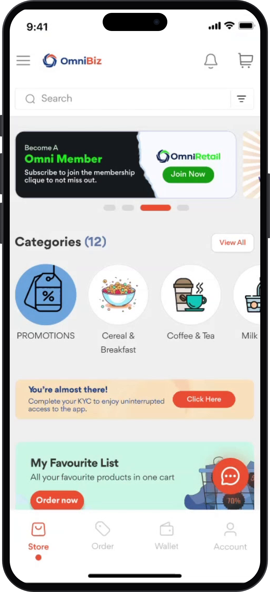
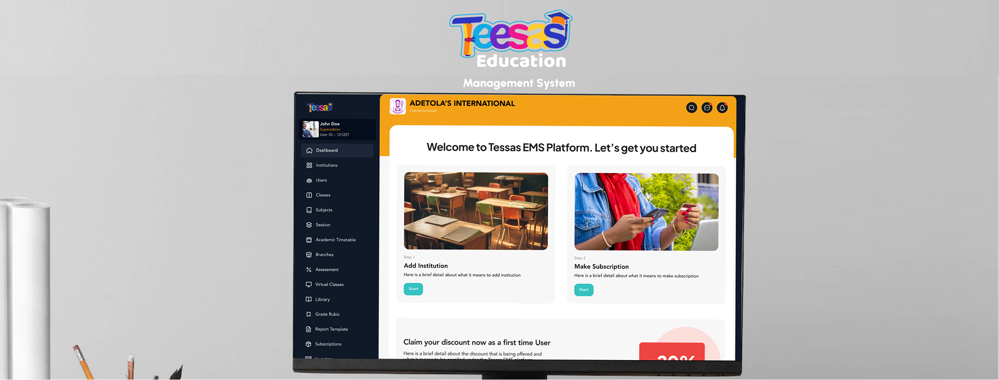

Senior Product Designer · Building Valideity
Excellent Makanju
I turn complex financial products and B2B workflows into clear, usable experiences.

Clear choice before voice.
Ordering and support have separate choices before a retailer enters the assistant.
Read the shipped case study

Account status, reconciled.
The original welcomed merchants to Level 3 while saying they were on Level 2. The redesign was checked in matched synthetic tests. Predicted, not production evidence.
Read the independent exploration
Four versions, one evolving LMS.
A live education product shaped through successive versions for students, teachers and parents.
Read the Teesas case study
A clearer path through the marketplace.
An independent page rebuild explored with clearly labeled Predicted evidence, not live user results.
Read the Sun King exploration
One design language for four product teams.
A shared system connecting product interfaces across OmniRetail's operating systems.
Read the OmniOne case studySalary advance, inside the app.
Research and product design for bringing salary advance into Fundall's mobile experience.
Read the Fundall case study